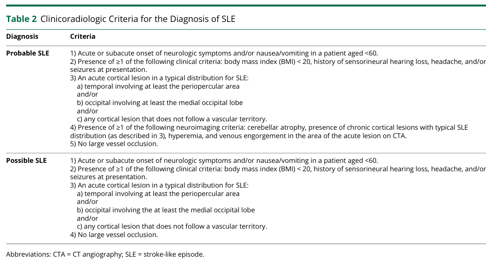

MELAS syndrome (Mitochondrial Encephalomyopathy, Lactic Acidosis, and Stroke-like episodes) is a maternally inherited multisystem mitochondrial disease caused most often by the m.3243A>G point mutation in the MT-TL1 gene, which encodes the mitochondrial tRNA-Leu(UUR). The mutation impairs mitochondrial tRNA aminoacylation and translation, producing a respiratory chain (oxidative phosphorylation) deficiency that manifests above a heteroplasmy threshold. Energy failure in brain, muscle, and small blood vessels drives the cardinal stroke-like episodes (often in non-vascular territories), lactic acidosis, seizures, myopathy, sensorineural hearing loss, and diabetes mellitus. Other MT-TL1 variants and variants in additional mitochondrial genes (notably MT-ND5) cause a minority of cases.
Ask a research question about MELAS Syndrome. OpenScientist will conduct autonomous deep research using the Disorder Mechanisms Knowledge Base and PubMed literature (typically 10-30 minutes).
Do not include personal health information in your question. Questions and results are cached in your browser's local storage.
name: MELAS Syndrome
creation_date: "2026-06-08T00:00:00Z"
description: >-
MELAS syndrome (Mitochondrial Encephalomyopathy, Lactic Acidosis, and
Stroke-like episodes) is a maternally inherited multisystem mitochondrial
disease caused most often by the m.3243A>G point mutation in the MT-TL1 gene,
which encodes the mitochondrial tRNA-Leu(UUR). The mutation impairs
mitochondrial tRNA aminoacylation and translation, producing a respiratory
chain (oxidative phosphorylation) deficiency that manifests above a
heteroplasmy threshold. Energy failure in brain, muscle, and small blood
vessels drives the cardinal stroke-like episodes (often in non-vascular
territories), lactic acidosis, seizures, myopathy, sensorineural hearing
loss, and diabetes mellitus. Other MT-TL1 variants and variants in additional
mitochondrial genes (notably MT-ND5) cause a minority of cases.
references:
- reference: PMID:20301411
title: MELAS.
tags:
- GeneReviews
category: Mendelian
parents:
- hereditary disease
- mitochondrial disease
disease_term:
preferred_term: MELAS syndrome
term:
id: MONDO:0010789
label: MELAS syndrome
has_subtypes:
- name: MT-TL1 m.3243A>G
display_name: MT-TL1 m.3243A>G (classic MELAS)
description: >-
The most common form, caused by the m.3243A>G transition in MT-TL1
(mitochondrial tRNA-Leu(UUR)), accounting for roughly 80% of MELAS cases.
- name: Other MT-TL1 variants
display_name: Other MT-TL1 (tRNA-Leu(UUR)) variants
description: >-
A minority of MELAS cases caused by non-3243 pathogenic variants in MT-TL1,
most notably m.3271T>C, which also impair tRNA-Leu(UUR) function.
- name: MT-ND5 and other genes
display_name: MT-ND5 and other mitochondrial-gene MELAS
description: >-
MELAS-spectrum disease caused by variants outside MT-TL1, particularly in
the complex I subunit gene MT-ND5, and occasionally other mitochondrial
tRNA or protein-coding genes.
prevalence:
- population: Adults in Southwest Finland (2022, m.3243A>G-related disease)
percentage: 4.2/100,000
evidence:
- reference: PMID:38361968
reference_title: "Incidence and prevalence of mtDNA-related adult mitochondrial disease in Southwest Finland, 2009-2022: an observational, population-based study."
supports: SUPPORT
evidence_source: HUMAN_CLINICAL
snippet: >-
The prevalence of adult mtDNA disease associated with m.3243A>G was
4.2/100 000 (95% CI, 2.5 to 6.7)
explanation: >-
Population-based prevalence of adult m.3243A>G-related mitochondrial
disease, the genotype underlying most MELAS.
notes: >-
m.3243A>G underlies multiple overlapping clinical syndromes (MELAS, MIDD),
so this figure reflects the broader m.3243A>G disease population rather than
classic MELAS specifically.
pathophysiology:
- name: Mitochondrial tRNA-Leu(UUR) translation defect
description: >-
The m.3243A>G variant in MT-TL1 disrupts the structure and aminoacylation
of mitochondrial tRNA-Leu(UUR), impairing mitochondrial protein synthesis
(translation) of the mtDNA-encoded respiratory chain subunits.
genes:
- preferred_term: MT-TL1
term:
id: hgnc:7490
label: MT-TL1
biological_processes:
- preferred_term: tRNA aminoacylation for protein translation
modifier: DECREASED
term:
id: GO:0006418
label: tRNA aminoacylation for protein translation
- preferred_term: mitochondrial translation
modifier: DECREASED
term:
id: GO:0032543
label: mitochondrial translation
evidence:
- reference: PMID:2102678
reference_title: A mutation in the tRNA(Leu)(UUR) gene associated with the MELAS subgroup of mitochondrial encephalomyopathies.
supports: SUPPORT
evidence_source: HUMAN_CLINICAL
snippet: >-
Here we report an A-to-G transition mutation at nucleotide pair 3,243 in
the dihydrouridine loop of mitochondrial tRNA(Leu)(UUR) that is specific
to patients with MELAS.
explanation: >-
The foundational paper identifying the m.3243A>G transition in
mitochondrial tRNA-Leu(UUR) (MT-TL1) as the MELAS-specific lesion.
- reference: PMID:23392880
reference_title: Taurine deficiency and MELAS are closely related syndromes.
supports: SUPPORT
evidence_source: IN_VITRO
snippet: >-
These mutations reduce both the aminoacylation of tRNA(Leu(UUR)) and a
posttranslational modification in the wobble position of tRNA(Leu(UUR)).
Both changes result in reduced transcription of mitochondria-encoded
proteins
explanation: >-
Directly supports the mechanism that MT-TL1 mutations impair tRNA
aminoacylation and wobble modification, reducing mitochondrial protein
synthesis.
downstream:
- target: Oxidative phosphorylation deficiency
causal_link_type: DIRECT
description: >-
Defective synthesis of mtDNA-encoded subunits reduces assembly and
activity of the respiratory chain complexes, especially complex I.
- name: Oxidative phosphorylation deficiency
description: >-
Impaired mitochondrial translation reduces the abundance and activity of
respiratory chain complexes, lowering ATP synthesis through oxidative
phosphorylation. The defect becomes clinically apparent above a heteroplasmy
threshold of mutant mtDNA.
biological_processes:
- preferred_term: oxidative phosphorylation
modifier: DECREASED
term:
id: GO:0006119
label: oxidative phosphorylation
- preferred_term: aerobic respiration
modifier: DECREASED
term:
id: GO:0009060
label: aerobic respiration
evidence:
- reference: PMID:26851065
reference_title: Impaired nitric oxide production in children with MELAS syndrome and the effect of arginine and citrulline supplementation.
supports: SUPPORT
evidence_source: HUMAN_CLINICAL
snippet: >-
The pathogenesis of this syndrome is not fully understood and believed to
result from several interacting mechanisms including impaired
mitochondrial energy production, microvasculature angiopathy, and nitric
oxide (NO) deficiency.
explanation: >-
Establishes impaired mitochondrial energy production (OXPHOS deficiency)
as a core pathogenic mechanism of MELAS.
downstream:
- target: Cellular energy failure and lactic acidosis
causal_link_type: DIRECT
description: >-
Reduced ATP synthesis forces a shift to anaerobic glycolysis, raising
lactate, and starves high-energy-demand tissues (brain, muscle, vascular
endothelium and smooth muscle).
- name: Cellular energy failure and lactic acidosis
description: >-
OXPHOS deficiency drives a compensatory increase in anaerobic glycolysis,
producing elevated blood and CSF lactate. Energy failure preferentially
affects metabolically demanding tissues, underlying encephalopathy,
myopathy, and endocrine dysfunction.
cell_types:
- preferred_term: neuron
term:
id: CL:0000540
label: neuron
- preferred_term: skeletal muscle fiber
term:
id: CL:0008002
label: skeletal muscle fiber
biological_processes:
- preferred_term: generation of precursor metabolites and energy
modifier: DECREASED
term:
id: GO:0006091
label: generation of precursor metabolites and energy
evidence:
- reference: PMID:26095523
reference_title: "MELAS syndrome: Clinical manifestations, pathogenesis, and treatment options."
supports: SUPPORT
evidence_source: HUMAN_CLINICAL
snippet: >-
The inability of dysfunctional mitochondria to generate sufficient energy
to meet the needs of various organs results in the multi-organ
dysfunction observed in MELAS syndrome.
explanation: >-
Supports cellular energy failure in high-demand tissues as the link
between OXPHOS deficiency and the multisystem phenotype.
downstream:
- target: Mitochondrial angiopathy and NO deficiency
causal_link_type: DIRECT
description: >-
Energy failure in cerebral small-vessel endothelium and smooth muscle
drives mitochondrial angiopathy and impaired nitric oxide availability.
- name: Mitochondrial angiopathy and NO deficiency
description: >-
Mitochondrial proliferation in the smooth muscle and endothelial cells of
cerebral small vessels (mitochondrial angiopathy) and impaired nitric oxide
availability produce endothelial dysfunction and impaired microvascular
perfusion. This NO-deficient endothelial dysfunction is the target of
L-arginine therapy.
cell_types:
- preferred_term: smooth muscle cell
term:
id: CL:0000192
label: smooth muscle cell
- preferred_term: endothelial cell
term:
id: CL:0000115
label: endothelial cell
biological_processes:
- preferred_term: nitric oxide biosynthetic process
modifier: DECREASED
term:
id: GO:0006809
label: nitric oxide biosynthetic process
evidence:
- reference: PMID:26095523
reference_title: "MELAS syndrome: Clinical manifestations, pathogenesis, and treatment options."
supports: SUPPORT
evidence_source: HUMAN_CLINICAL
snippet: >-
Energy deficiency can also stimulate mitochondrial proliferation in the
smooth muscle and endothelial cells of small blood vessels leading to
angiopathy and impaired blood perfusion in the microvasculature of
several organs.
explanation: >-
Directly supports the mitochondrial angiopathy mechanism in cerebral
small vessels underlying stroke-like episodes.
- reference: PMID:31693521
reference_title: Arginine therapy in mitochondrial myopathy, encephalopathy, lactic acidosis, and stroke-like episodes.
supports: SUPPORT
evidence_source: HUMAN_CLINICAL
snippet: >-
MELAS is associated with endothelial dysfunction by decreased plasma
L-arginine, nitric oxide (NO), and cyclic guanosine monophosphate.
explanation: >-
Supports impaired nitric oxide availability and endothelial dysfunction
as a contributor to stroke-like episodes.
downstream:
- target: Stroke-like episodes
causal_link_type: DIRECT
description: >-
Mitochondrial angiopathy and NO deficiency, together with neuronal energy
failure, converge to produce stroke-like episodes that do not respect
classic vascular territories.
- name: Stroke-like episodes
description: >-
Acute neurological deficits with neuroimaging lesions that do not conform to
classic vascular territories, the defining clinical manifestation of MELAS,
arising from mitochondrial angiopathy, NO deficiency, and neuronal energy
failure.
evidence:
- reference: PMID:20301411
reference_title: MELAS.
supports: SUPPORT
evidence_source: HUMAN_CLINICAL
snippet: >-
During the stroke-like episodes neuroimaging shows increased T2-weighted
signal areas that do not correspond to the classic vascular distribution
(hence the term "stroke-like").
explanation: >-
GeneReviews documents stroke-like episodes with non-vascular-territory
neuroimaging lesions as the defining MELAS feature, the clinical outcome
of the angiopathy and energy-failure mechanisms.
phenotypes:
- name: Stroke-like episodes
description: >-
Acute neurological deficits with neuroimaging lesions that do not conform to
classic vascular territories, a defining feature of MELAS.
phenotype_term:
preferred_term: Stroke-like episode
term:
id: HP:0002401
label: Stroke-like episode
evidence:
- reference: PMID:20301411
reference_title: MELAS.
supports: SUPPORT
evidence_source: HUMAN_CLINICAL
snippet: >-
During the stroke-like episodes neuroimaging shows increased T2-weighted
signal areas that do not correspond to the classic vascular distribution
(hence the term "stroke-like").
explanation: >-
GeneReviews documents stroke-like episodes with non-vascular-territory
neuroimaging lesions as the defining MELAS feature.
- name: Lactic acidosis
description: >-
Elevated lactate in blood and cerebrospinal fluid from the shift toward
anaerobic glycolysis.
phenotype_term:
preferred_term: Lactic acidosis
term:
id: HP:0003128
label: Lactic acidosis
evidence:
- reference: PMID:20301411
reference_title: MELAS.
supports: SUPPORT
evidence_source: HUMAN_CLINICAL
snippet: >-
Lactic acidemia is very common and muscle biopsies typically show ragged
red fibers.
explanation: >-
GeneReviews documents lactic acidemia as a very common feature of MELAS.
- name: Seizures
description: Epileptic seizures, often focal or generalized, frequently accompanying stroke-like episodes.
phenotype_term:
preferred_term: Seizure
term:
id: HP:0001250
label: Seizure
evidence:
- reference: PMID:20301411
reference_title: MELAS.
supports: SUPPORT
evidence_source: HUMAN_CLINICAL
snippet: >-
Common clinical manifestations include stroke-like episodes,
encephalopathy with seizures and/or dementia, muscle weakness and
exercise intolerance
explanation: >-
GeneReviews lists encephalopathy with seizures among the common
manifestations of MELAS.
- name: Encephalopathy
description: Encephalopathy with cognitive decline, sometimes progressing to dementia.
phenotype_term:
preferred_term: Encephalopathy
term:
id: HP:0001298
label: Encephalopathy
evidence:
- reference: PMID:20301411
reference_title: MELAS.
supports: SUPPORT
evidence_source: HUMAN_CLINICAL
snippet: >-
Common clinical manifestations include stroke-like episodes,
encephalopathy with seizures and/or dementia, muscle weakness and
exercise intolerance
explanation: >-
GeneReviews lists encephalopathy with seizures and/or dementia among the
common manifestations of MELAS.
- name: Mitochondrial myopathy
description: Proximal muscle weakness, exercise intolerance, and ragged-red fibers on muscle biopsy.
phenotype_term:
preferred_term: Myopathy
term:
id: HP:0003198
label: Myopathy
evidence:
- reference: PMID:20301411
reference_title: MELAS.
supports: SUPPORT
evidence_source: HUMAN_CLINICAL
snippet: >-
Common clinical manifestations include stroke-like episodes,
encephalopathy with seizures and/or dementia, muscle weakness and
exercise intolerance
explanation: >-
GeneReviews lists muscle weakness and exercise intolerance, the clinical
expression of mitochondrial myopathy, among common manifestations.
- name: Ragged-red fibers
description: Ragged-red fibers on modified Gomori trichrome staining of muscle biopsy, reflecting mitochondrial proliferation.
phenotype_term:
preferred_term: Ragged-red muscle fibers
term:
id: HP:0003200
label: Ragged-red muscle fibers
evidence:
- reference: PMID:20301411
reference_title: MELAS.
supports: SUPPORT
evidence_source: HUMAN_CLINICAL
snippet: >-
Lactic acidemia is very common and muscle biopsies typically show ragged
red fibers.
explanation: >-
GeneReviews documents ragged-red fibers as a typical muscle biopsy
finding in MELAS.
- name: Exercise intolerance
description: Reduced exercise capacity due to impaired mitochondrial energy production.
phenotype_term:
preferred_term: Exercise intolerance
term:
id: HP:0003546
label: Exercise intolerance
evidence:
- reference: PMID:20301411
reference_title: MELAS.
supports: SUPPORT
evidence_source: HUMAN_CLINICAL
snippet: >-
Common clinical manifestations include stroke-like episodes,
encephalopathy with seizures and/or dementia, muscle weakness and
exercise intolerance
explanation: >-
GeneReviews lists exercise intolerance among the common manifestations of
MELAS.
- name: Sensorineural hearing loss
description: Progressive sensorineural hearing impairment, common in m.3243A>G carriers.
phenotype_term:
preferred_term: Sensorineural hearing impairment
term:
id: HP:0000407
label: Sensorineural hearing impairment
evidence:
- reference: PMID:26095523
reference_title: "MELAS syndrome: Clinical manifestations, pathogenesis, and treatment options."
supports: SUPPORT
evidence_source: HUMAN_CLINICAL
snippet: >-
MELAS syndrome is a multi-organ disease with broad manifestations
including stroke-like episodes, dementia, epilepsy, lactic acidemia,
myopathy, recurrent headaches, hearing impairment, diabetes, and short
stature.
explanation: >-
The El-Hattab review lists hearing impairment among the broad
manifestations of MELAS.
- name: Diabetes mellitus
description: Diabetes mellitus, part of the maternally inherited diabetes and deafness (MIDD) overlap of the m.3243A>G mutation.
phenotype_term:
preferred_term: Diabetes mellitus
term:
id: HP:0000819
label: Diabetes mellitus
evidence:
- reference: PMID:26095523
reference_title: "MELAS syndrome: Clinical manifestations, pathogenesis, and treatment options."
supports: SUPPORT
evidence_source: HUMAN_CLINICAL
snippet: >-
MELAS syndrome is a multi-organ disease with broad manifestations
including stroke-like episodes, dementia, epilepsy, lactic acidemia,
myopathy, recurrent headaches, hearing impairment, diabetes, and short
stature.
explanation: >-
The El-Hattab review lists diabetes among the broad manifestations of
MELAS, reflecting the endocrine involvement of the m.3243A>G mutation.
- name: Migraine-like headaches
description: Recurrent migraine-like headaches, often heralding stroke-like episodes.
phenotype_term:
preferred_term: Migraine
term:
id: HP:0002076
label: Migraine
evidence:
- reference: PMID:20301411
reference_title: MELAS.
supports: SUPPORT
evidence_source: HUMAN_CLINICAL
snippet: >-
muscle weakness and exercise intolerance, normal early psychomotor
development, recurrent headaches, recurrent vomiting, hearing impairment,
peripheral neuropathy, learning disability, and short stature
explanation: >-
GeneReviews lists recurrent headaches among the common manifestations;
these are typically migraine-like and often herald stroke-like episodes.
- name: Short stature
description: Short stature is common in individuals with MELAS.
phenotype_term:
preferred_term: Short stature
term:
id: HP:0004322
label: Short stature
evidence:
- reference: PMID:20301411
reference_title: MELAS.
supports: SUPPORT
evidence_source: HUMAN_CLINICAL
snippet: >-
muscle weakness and exercise intolerance, normal early psychomotor
development, recurrent headaches, recurrent vomiting, hearing impairment,
peripheral neuropathy, learning disability, and short stature
explanation: >-
GeneReviews lists short stature among the common manifestations of MELAS.
- name: Recurrent vomiting
description: Recurrent vomiting is a common manifestation of MELAS, often accompanying stroke-like episodes.
phenotype_term:
preferred_term: Recurrent vomiting
term:
id: HP:0002013
label: Vomiting
temporality: RECURRENT
evidence:
- reference: PMID:20301411
reference_title: MELAS.
supports: SUPPORT
evidence_source: HUMAN_CLINICAL
snippet: >-
muscle weakness and exercise intolerance, normal early psychomotor
development, recurrent headaches, recurrent vomiting, hearing impairment,
peripheral neuropathy, learning disability, and short stature
explanation: >-
GeneReviews lists recurrent vomiting among the common manifestations of
MELAS.
- name: Peripheral neuropathy
description: Peripheral neuropathy is a common manifestation of MELAS.
phenotype_term:
preferred_term: Peripheral neuropathy
term:
id: HP:0009830
label: Peripheral neuropathy
evidence:
- reference: PMID:20301411
reference_title: MELAS.
supports: SUPPORT
evidence_source: HUMAN_CLINICAL
snippet: >-
muscle weakness and exercise intolerance, normal early psychomotor
development, recurrent headaches, recurrent vomiting, hearing impairment,
peripheral neuropathy, learning disability, and short stature
explanation: >-
GeneReviews lists peripheral neuropathy among the common manifestations of
MELAS.
- name: Learning disability
description: Learning disability is a common manifestation of MELAS.
phenotype_term:
preferred_term: Learning disability
term:
id: HP:0001328
label: Specific learning disability
evidence:
- reference: PMID:20301411
reference_title: MELAS.
supports: SUPPORT
evidence_source: HUMAN_CLINICAL
snippet: >-
muscle weakness and exercise intolerance, normal early psychomotor
development, recurrent headaches, recurrent vomiting, hearing impairment,
peripheral neuropathy, learning disability, and short stature
explanation: >-
GeneReviews lists learning disability among the common manifestations of
MELAS.
- name: Cardiomyopathy
description: >-
Cardiomyopathy and cardiac conduction defects occur in MELAS, reflecting
energy failure in cardiac tissue.
phenotype_term:
preferred_term: Cardiomyopathy
term:
id: HP:0001638
label: Cardiomyopathy
evidence:
- reference: PMID:20301411
reference_title: MELAS.
supports: SUPPORT
evidence_source: HUMAN_CLINICAL
snippet: >-
Ptosis, cardiomyopathy, cardiac conduction defects, nephropathy, and
migraine headache are treated in the standard manner.
explanation: >-
GeneReviews documents cardiomyopathy and cardiac conduction defects as
manifestations of MELAS requiring standard management.
- name: Cortical visual impairment
description: Visual impairment, including hemianopia or cortical blindness following occipital stroke-like episodes.
phenotype_term:
preferred_term: Hemianopia
term:
id: HP:0012377
label: Hemianopia
evidence:
- reference: PMID:31693521
reference_title: Arginine therapy in mitochondrial myopathy, encephalopathy, lactic acidosis, and stroke-like episodes.
supports: SUPPORT
evidence_source: HUMAN_CLINICAL
snippet: >-
the sudden, transient, and recurrent development of stroke-resembling
symptoms (headache, nausea/vomiting, visual disturbance/visual field
abnormalities, seizures, and impaired consciousness: ictus)
explanation: >-
Visual field abnormalities (e.g., hemianopia) commonly accompany
occipital stroke-like episodes in MELAS.
genetic:
- name: MT-TL1 m.3243A>G
gene_term:
preferred_term: MT-TL1
term:
id: hgnc:7490
label: MT-TL1
association: >-
The m.3243A>G point mutation in MT-TL1 (mitochondrial tRNA-Leu(UUR)) is the
most common cause of MELAS, found in roughly 80% of patients. Disease
expression depends on the heteroplasmy level of mutant mtDNA.
subtype: MT-TL1 m.3243A>G
inheritance:
- name: Mitochondrial inheritance
inheritance_term:
preferred_term: Mitochondrial inheritance
term:
id: HP:0001427
label: Mitochondrial inheritance
evidence:
- reference: PMID:24846800
reference_title: "Detection rates and phenotypic spectrum of m.3243A>G in the MT-TL1 gene: a molecular diagnostic laboratory perspective."
supports: SUPPORT
evidence_source: HUMAN_CLINICAL
snippet: >-
factors including random mitochondrial segregation and consequent
variable tissue heteroplasmy are recognised to contribute to a much
broader phenotypic spectrum associated with the MT-TL1 m.3243A>G
mutation
explanation: >-
Supports maternal mitochondrial inheritance with heteroplasmy-dependent,
variable phenotypic expression of the m.3243A>G mutation.
- reference: PMID:37988592
reference_title: Penetrance and expressivity of mitochondrial variants in a large clinically unselected population.
supports: SUPPORT
evidence_source: HUMAN_CLINICAL
snippet: >-
Multi-system disease risk and penetrance of diabetes, deafness and
heart failure greatly increased with m.3243A>G level ≥ 10%.
explanation: >-
UK Biobank data quantifying the heteroplasmy threshold effect: penetrance
of multisystem disease rises sharply once m.3243A>G heteroplasmy reaches
≥10%.
evidence:
- reference: PMID:20301411
reference_title: MELAS.
supports: SUPPORT
evidence_source: HUMAN_CLINICAL
snippet: >-
The m.3243A>G pathogenic variant in the mitochondrial gene MT-TL1 is
present in approximately 80% of individuals with MELAS.
explanation: >-
GeneReviews establishes m.3243A>G in MT-TL1 as the most common cause of
MELAS (~80% of cases).
- reference: PMID:2102678
reference_title: A mutation in the tRNA(Leu)(UUR) gene associated with the MELAS subgroup of mitochondrial encephalomyopathies.
supports: SUPPORT
evidence_source: HUMAN_CLINICAL
snippet: >-
The mutation was present in 26 out of 31 independent MELAS patients and 1
out of 29 CPEO patients, but absent in the 5 MERRF and 50 controls tested.
explanation: >-
Original genotyping data establishing the m.3243A>G variant as
MELAS-specific.
- name: MT-ND5 and other mitochondrial-gene variants
gene_term:
preferred_term: MT-ND5
term:
id: hgnc:7461
label: MT-ND5
association: >-
A minority of MELAS cases are caused by variants outside MT-TL1, including
the complex I subunit gene MT-ND5.
subtype: MT-ND5 and other genes
evidence:
- reference: PMID:20301411
reference_title: MELAS.
supports: SUPPORT
evidence_source: HUMAN_CLINICAL
snippet: >-
Pathogenic variants in MT-TL1 or other mtDNA genes, particularly MT-ND5,
can also cause this disorder.
explanation: >-
GeneReviews documents MT-ND5 and other mtDNA genes as additional causes of
MELAS beyond the common MT-TL1 m.3243A>G variant.
treatments:
- name: L-arginine therapy
description: >-
Intravenous L-arginine in the acute phase and oral supplementation for
prophylaxis aims to restore nitric oxide availability and improve
endothelial function, reducing the frequency and severity of stroke-like
episodes.
treatment_term:
preferred_term: Pharmacotherapy
term:
id: NCIT:C15986
label: Pharmacotherapy
therapeutic_agent:
- preferred_term: L-arginine
term:
id: CHEBI:16467
label: L-arginine
target_mechanisms:
- target: Mitochondrial angiopathy and NO deficiency
treatment_effect: RESTORES
description: >-
L-arginine, a nitric oxide precursor, aims to restore nitric oxide
availability and improve endothelial function at the angiopathy node,
reducing the frequency and severity of stroke-like episodes.
evidence:
- reference: PMID:26095523
reference_title: "MELAS syndrome: Clinical manifestations, pathogenesis, and treatment options."
supports: SUPPORT
evidence_source: HUMAN_CLINICAL
snippet: >-
Unblinded studies showed that l-arginine therapy improves stroke-like
episode symptoms and decreases the frequency and severity of these
episodes.
explanation: >-
Supports L-arginine as a therapy that reduces stroke-like episode
frequency and severity in MELAS.
- reference: PMID:31693521
reference_title: Arginine therapy in mitochondrial myopathy, encephalopathy, lactic acidosis, and stroke-like episodes.
supports: SUPPORT
evidence_source: HUMAN_CLINICAL
snippet: >-
the systematic administration of L-arginine to patients with MELAS
significantly improved the survival curve of patients compared with
natural history.
explanation: >-
Clinical trial follow-up data supporting survival benefit of systematic
L-arginine therapy in MELAS.
- name: Taurine supplementation
description: >-
Oral taurine supplementation aims to restore taurine modification of the
wobble uridine of mutant mitochondrial tRNA-Leu(UUR), improving codon
decoding and reducing stroke-like episode recurrence.
treatment_term:
preferred_term: dietary intervention
term:
id: MAXO:0000088
label: dietary intervention
therapeutic_agent:
- preferred_term: taurine
term:
id: CHEBI:15891
label: taurine
evidence:
- reference: PMID:29666206
reference_title: "Taurine supplementation for prevention of stroke-like episodes in MELAS: a multicentre, open-label, 52-week phase III trial."
supports: SUPPORT
evidence_source: HUMAN_CLINICAL
snippet: >-
Taurine reduced the annual relapse rate of stroke-like episodes from 2.22
to 0.72 (P=0.001).
explanation: >-
A multicentre phase III trial showing high-dose taurine significantly
reduced stroke-like episode recurrence in MELAS.
- reference: PMID:29666206
reference_title: "Taurine supplementation for prevention of stroke-like episodes in MELAS: a multicentre, open-label, 52-week phase III trial."
supports: SUPPORT
evidence_source: HUMAN_CLINICAL
snippet: >-
a taurine modification defect at the first anticodon nucleotide of
mitochondrial tRNALeu(UUR), resulting in failure to decode codons
accurately
explanation: >-
Provides the molecular rationale: taurine restores wobble-uridine
modification of mutant tRNA-Leu(UUR), improving codon decoding.
- name: Citrulline supplementation
description: >-
Oral citrulline, a nitric oxide precursor, increases arginine availability
and nitric oxide production. Stable-isotope studies suggest citrulline may be
a more effective NO precursor than arginine in MELAS.
treatment_term:
preferred_term: Pharmacotherapy
term:
id: NCIT:C15986
label: Pharmacotherapy
therapeutic_agent:
- preferred_term: L-citrulline
term:
id: CHEBI:16349
label: L-citrulline
target_mechanisms:
- target: Mitochondrial angiopathy and NO deficiency
treatment_effect: RESTORES
description: >-
Citrulline increases intracellular arginine availability and nitric oxide
synthesis, targeting the NO-deficient endothelial dysfunction at the
angiopathy node.
evidence:
- reference: PMID:26851065
reference_title: Impaired nitric oxide production in children with MELAS syndrome and the effect of arginine and citrulline supplementation.
supports: SUPPORT
evidence_source: HUMAN_CLINICAL
snippet: >-
The greater effect of citrulline in increasing NO production is due to its
greater ability to increase arginine availability particularly in the
intracellular compartment in which NO synthesis takes place.
explanation: >-
Stable-isotope study showing citrulline increases NO production more
effectively than arginine in children with MELAS, supporting it as a NO
precursor therapy.
- name: Supportive mitochondrial disease management
description: >-
Supportive care including antiseizure medications, management of diabetes
and hearing loss, avoidance of mitochondrial toxins, and mitochondrial
cofactor supplementation (e.g., coenzyme Q10, L-carnitine).
treatment_term:
preferred_term: supportive care
term:
id: MAXO:0000950
label: supportive care
evidence:
- reference: PMID:26095523
reference_title: "MELAS syndrome: Clinical manifestations, pathogenesis, and treatment options."
supports: SUPPORT
evidence_source: HUMAN_CLINICAL
snippet: >-
Management is largely symptomatic and should involve a multidisciplinary
team.
explanation: >-
Supports symptomatic, multidisciplinary supportive management as the
mainstay of MELAS care.
- reference: PMID:26095523
reference_title: "MELAS syndrome: Clinical manifestations, pathogenesis, and treatment options."
supports: PARTIAL
evidence_source: HUMAN_CLINICAL
snippet: >-
Additionally, carnitine and coenzyme Q10 are commonly used in MELAS
syndrome without proven efficacy.
explanation: >-
Supports common use of carnitine and coenzyme Q10 cofactors, while noting
their efficacy is unproven (hence PARTIAL).
inheritance:
- name: Mitochondrial inheritance
inheritance_term:
preferred_term: Mitochondrial inheritance
term:
id: HP:0001427
label: Mitochondrial inheritance
description: >-
MELAS is maternally inherited through the mitochondrial genome. Clinical
expression depends on the heteroplasmy level of mutant mtDNA, with a
threshold effect.
evidence:
- reference: PMID:26095523
reference_title: "MELAS syndrome: Clinical manifestations, pathogenesis, and treatment options."
supports: SUPPORT
evidence_source: HUMAN_CLINICAL
snippet: >-
Mitochondrial encephalomyopathy, lactic acidosis, and stroke-like
episodes (MELAS) syndrome is one of the most frequent maternally inherited
mitochondrial disorders.
explanation: >-
Establishes MELAS as a maternally inherited mitochondrial disorder.
- reference: PMID:2102678
reference_title: A mutation in the tRNA(Leu)(UUR) gene associated with the MELAS subgroup of mitochondrial encephalomyopathies.
supports: SUPPORT
evidence_source: HUMAN_CLINICAL
snippet: >-
Southern blot analysis confirmed that the mutant DNA always coexists with
the wild-type DNA
explanation: >-
Documents heteroplasmy (coexistence of mutant and wild-type mtDNA), the
basis for the threshold effect in MELAS.
environmental:
- name: Mitochondrial toxins and agents to avoid
notes: >-
Certain drugs and exposures can precipitate or worsen MELAS by impairing
mitochondrial function or triggering lactic acidosis, and should be avoided.
evidence:
- reference: PMID:20301411
reference_title: MELAS.
supports: SUPPORT
evidence_source: OTHER
snippet: >-
Mitochondrial toxins, including aminoglycoside antibiotics, linezolid,
cigarettes, and alcohol; valproic acid for seizure treatment; metformin
because of its propensity to cause lactic acidosis; dichloroacetate (DCA)
because of increased risk for peripheral neuropathy.
explanation: >-
GeneReviews lists agents and circumstances to avoid in MELAS, including
aminoglycosides, linezolid, valproic acid, metformin, dichloroacetate,
cigarettes, and alcohol.
MELAS syndrome is a maternally inherited mitochondrial disorder, classically defined by mitochondrial encephalopathy, lactic acidosis, and recurrent stroke-like episodes (SLEs). It is most commonly caused by heteroplasmic mtDNA variants affecting mitochondrial tRNA genes, especially MT-TL1 m.3243A>G (~80% of cases in multiple contemporary reviews/cohorts). Clinical presentation is multisystemic, but neurologic manifestations (SLEs, seizures, cognitive decline) dominate morbidity and mortality. Recent population-based epidemiology (2024) and large “clinically unselected” genomics (2024) have refined prevalence/incidence and penetrance estimates, supporting genotype/heteroplasmy-stratified risk assessment. Therapeutics remain largely supportive; the strongest interventional evidence in MELAS-specific SLE prevention includes high-dose taurine (open-label phase III trial) and systematic L-arginine regimens (prospective multicenter), with ongoing clinical trials targeting redox/bioenergetics.
MELAS is a rare mitochondrial syndrome characterized by encephalopathy, lactic acidosis, and stroke-like episodes (SLEs) with non-vascular-distribution brain lesions that may shift over time. Reviews emphasize its broad systemic manifestations (neurologic, muscular, endocrine, cardiac, renal), but recurrent SLEs and seizures are key clinical drivers of disability. (na2024diagnosisandmanagement pages 1-2, na2024diagnosisandmanagement pages 8-9)
Abstract-quotable definition (recent cohort/review): - Xu et al. (Orphanet J Rare Dis, 2024-12, DOI: 10.1186/s13023-024-03511-4) describes MELAS as “Mitochondrial encephalomyopathy with lactic acidosis and stroke-like episodes,” a maternally inherited mitochondrial disorder affecting primarily the CNS and skeletal muscle. (xu2024multisystemclinicopathologicand pages 1-2)
Available in retrieved evidence - OMIM: #540000 (explicitly stated in Xu et al. 2024). (xu2024multisystemclinicopathologicand pages 1-2)
Not found in retrieved evidence (should be confirmed from external disease ontologies/databases): - Orphanet (ORPHA), ICD-10/ICD-11, MeSH, MONDO.
Evidence used here is derived from: - Aggregated disease-level resources: narrative reviews (e.g., Na & Lee 2024). (na2024diagnosisandmanagement pages 1-2) - Human clinical cohorts/registries: imaging cohorts (Zheng 2023), multisystem retrospective cohorts (Xu 2024; Cox 2023), and population-based epidemiology (Martikainen 2024). (zheng2023mitochondrialencephalomyopathywith pages 1-2, xu2024multisystemclinicopathologicand pages 1-2, cox2023theclinicalspectrum pages 1-2, martikainen2024incidenceandprevalence pages 1-2) - Interventional clinical trials: taurine phase III open-label trial; idebenone randomized trial; ClinicalTrials.gov interventional studies. (ohsawa2019taurinesupplementationfor pages 1-2, NCT00887562 chunk 1)
Genetic (primary): MELAS is most commonly due to pathogenic mtDNA variants affecting mitochondrial translation, especially heteroplasmic MT-TL1 m.3243A>G, repeatedly cited as accounting for ~80% of MELAS cases. (na2024diagnosisandmanagement pages 7-8, xu2024multisystemclinicopathologicand pages 1-2)
Other mtDNA variants associated with MELAS include MT-ND5 (e.g., m.13513G>A, ~10–15% in one 2024 review) and other tRNA gene variants (e.g., MT-TH, MT-TK), plus rarer MT-TL1 variants (e.g., m.3271T>C). (na2024diagnosisandmanagement pages 7-8)
Mechanistic causal chain (current understanding): - Pathogenic mtDNA variants impair mitochondrial protein synthesis → defective oxidative phosphorylation (OXPHOS) → cellular energy failure and lactate accumulation. (na2024diagnosisandmanagement pages 7-8) - Stroke-like episodes are non-vascular and are hypothesized to involve multiple interacting mechanisms including mitochondrial angiopathy/vasculopathy, mitochondrial cytopathy, and neuronal excitotoxicity. (zheng2023mitochondrialencephalomyopathywith pages 1-2, xu2024multisystemclinicopathologicand pages 1-2)
Genetic risk factors - Presence of heteroplasmic pathogenic mtDNA variants, especially m.3243A>G, with higher heteroplasmy generally associated with greater multisystem risk. - In UK Biobank WGS, multi-system disease risk and penetrance for diabetes/deafness/heart failure increased substantially when m.3243A>G heteroplasmy reached ≥10% (see Section 9). (cannon2024penetranceandexpressivity pages 1-2)
Environmental/physiologic risk factors (evidence-limited in retrieved texts): - Episodes may be precipitated by physiologic stressors (infections, metabolic decompensation), but specific quantified environmental triggers were not systematically captured in the retrieved evidence.
No validated genetic “protective variants” were identified in the retrieved evidence. Nonetheless, Cannon et al. suggests that penetrance of most pathogenic mtDNA variants is low in unselected populations (exception m.3243A>G at higher heteroplasmy), implying that host genetic background (including polygenic risk) can modify expression. (cannon2024penetranceandexpressivity pages 1-2)
Cannon et al. (Human Mol Genet, 2024-11, DOI: 10.1093/hmg/ddad194) reports that diabetes risk with m.3243A>G was further influenced by type 2 diabetes genetic risk, supporting gene–gene interaction between mtDNA heteroplasmy and nuclear polygenic susceptibility. (cannon2024penetranceandexpressivity pages 1-2)
A concise frequency summary (from a phenotype-focused review letter) reports: - SLEs: >90% - Seizures: 76% - Headache: 50% - Vomiting: 55% - Visual loss: 52% - Muscle weakness: 48% - Short stature: >25% - Diabetes: 10–24% These estimates should be interpreted cautiously because they are compiled narrative frequencies rather than from a single prospective cohort. (finsterer2020rarephenotypicmanifestations pages 1-2)
A 2023 large retrospective cohort spanning MELAS to asymptomatic carriers reported: - Seizures in MELAS: 88.1% (vs 16.7% in symptomatic non-MELAS). (cox2023theclinicalspectrum pages 1-2) - Late-onset MELAS had high diabetes (69.2%) and nephropathy (53.8%), suggesting phenotype shifts with age at first SLE. (cox2023theclinicalspectrum pages 1-2)
Quantitative QoL instruments (e.g., SF-36, EQ-5D, PROMIS) were not reported in the retrieved evidence. Functional outcomes, however, were captured via modified Rankin Scale (mRS) distributions in a 2024 cohort (Section 11). (gao2024longtermprognosticfactors pages 1-2)
A phenotype-to-HPO mapping table is provided below.
| MELAS clinical feature | Suggested HPO term | HP ID | Frequency / onset notes | Evidence source |
|---|---|---|---|---|
| Stroke-like episodes | Stroke-like episode | HP:0002401 | >90% of patients in Finsterer 2020; typically a core feature of MELAS, often before age 40 in classic diagnostic criteria; all 39 patients in Gao 2024 initially presented with stroke-like episodes | (finsterer2020rarephenotypicmanifestations pages 1-2, gao2024longtermprognosticfactors pages 1-2) |
| Seizures | Seizure | HP:0001250 | 76% in Finsterer 2020; 88.1% in MELAS group in Cox 2023 | (finsterer2020rarephenotypicmanifestations pages 1-2, cox2023theclinicalspectrum pages 1-2) |
| Lactic acidosis | Lactic acidosis | HP:0003128 | Hallmark biochemical abnormality; elevated plasma/CSF lactate and lactate peak on MRS; not quantified in retrieved evidence for symptom frequency | (na2024diagnosisandmanagement pages 7-8, na2024diagnosisandmanagement pages 8-9) |
| Migraine / headache | Headache | HP:0002315 | Headache 50% in Finsterer 2020; recurrent headache is also part of classic diagnostic criteria; migraine-like headache reported in MELAS cohorts | (finsterer2020rarephenotypicmanifestations pages 1-2, elhattab2017arginineandcitrulline pages 1-2) |
| Vomiting | Vomiting | HP:0002013 | 55% in Finsterer 2020; recurrent vomiting is part of classic diagnostic criteria | (finsterer2020rarephenotypicmanifestations pages 1-2, elhattab2017arginineandcitrulline pages 1-2) |
| Muscle weakness / myopathy / exercise intolerance | Proximal muscle weakness / Mitochondrial myopathy / Exercise intolerance | HP:0003701 / HP:0003200 / HP:0003546 | Muscle weakness 48% in Finsterer 2020; proximal muscle weakness and exercise intolerance were predominant in Xu 2024 cohort; onset variable, often childhood to young adulthood | (finsterer2020rarephenotypicmanifestations pages 1-2, xu2024multisystemclinicopathologicand pages 1-2) |
| Sensorineural hearing loss | Sensorineural hearing impairment | HP:0000407 | Diabetes and deafness associated with intermediate heteroplasmy (about 50–70%) in Na 2024; hearing loss was the first symptom in 51.6% of symptomatic non-MELAS vs 24.4% of MELAS in Cox 2023; exact overall MELAS frequency not quantified in retrieved evidence | (na2024diagnosisandmanagement pages 7-8, cox2023theclinicalspectrum pages 1-2) |
| Diabetes mellitus | Diabetes mellitus | HP:0000819 | Reported in 10–24% in Finsterer 2020; late-onset MELAS had diabetes in 69.2% vs 13.8% standard-onset in Cox 2023 | (finsterer2020rarephenotypicmanifestations pages 1-2, cox2023theclinicalspectrum pages 1-2) |
| Short stature | Short stature | HP:0004322 | >25% of cases in Finsterer 2020 | (finsterer2020rarephenotypicmanifestations pages 1-2) |
| Cortical blindness / vision loss | Cortical visual impairment / Cortical blindness | HP:0100704 / HP:0007956 | Visual loss 52% in Finsterer 2020; cortical vision loss listed as a typical phenotype in Na 2024; vision loss in first stroke-like episode helped define atypical MELAS in Alves 2023 summary | (finsterer2020rarephenotypicmanifestations pages 1-2, na2024diagnosisandmanagement pages 8-9) |
| Cerebellar atrophy | Cerebellar atrophy | HP:0001272 | 68% (40/59 imaging studies) in Zheng 2023; also highly discriminatory for stroke-like episodes vs acute ischemic stroke in Khasminsky 2023 | (zheng2023mitochondrialencephalomyopathywith pages 1-2, khasminsky2023clinicoradiologiccriteriafor pages 1-2) |
| Basal ganglia calcification | Basal ganglia calcification | HP:0002135 | 67% (6/9 patients with CT) in Zheng 2023 | (zheng2023mitochondrialencephalomyopathywith pages 1-2) |
Table: This table maps core MELAS manifestations to suggested Human Phenotype Ontology terms and summarizes frequency or onset information from the retrieved evidence. It is useful for structured phenotype curation in a disease knowledge base.
Primary causal locus (mtDNA): - MT-TL1 (mitochondrially encoded tRNA leucine 1) with canonical m.3243A>G heteroplasmic variant. (na2024diagnosisandmanagement pages 7-8, xu2024multisystemclinicopathologicand pages 1-2)
Other mtDNA genes/regions implicated (not exhaustive; examples from retrieved evidence): - MT-ND5 (including m.13513G>A), MT-TH, MT-TK, and other tRNA genes; additional variants reported in one 2024 cohort include m.5628T>C, m.6352-13952del, and 9-bp deletions combined with m.3243A>G. (na2024diagnosisandmanagement pages 7-8, xu2024multisystemclinicopathologicand pages 1-2)
Direct nuclear “modifier genes” were not extracted from the retrieved texts. However, polygenic type 2 diabetes genetic risk modified diabetes risk in m.3243A>G carriers. (cannon2024penetranceandexpressivity pages 1-2)
No MELAS-specific epigenetic or chromosomal abnormality evidence was found in the retrieved texts.
Specific toxins, lifestyle exposures, or infectious triggers were not systematically quantified in the retrieved evidence. Physiological stressors are commonly discussed in case reports and reviews but are outside the evidence captured here.
Upstream driver: impaired mitochondrial translation and OXPHOS defect → ATP deficit and lactate accumulation (systemic and cerebral). (na2024diagnosisandmanagement pages 7-8)
Stroke-like episode mechanisms (multiple interacting hypotheses): - Mitochondrial vasculopathy/angiopathy: microvascular dysfunction and impaired perfusion; NO deficiency is a prominent mechanistic hypothesis supporting arginine/citrulline therapy. (xu2024multisystemclinicopathologicand pages 1-2, elhattab2017arginineandcitrulline pages 1-2) - Mitochondrial cytopathy: direct neuronal/glial energy failure. (zheng2023mitochondrialencephalomyopathywith pages 1-2) - Neuronal excitotoxicity / hyperexcitability: implicated by seizure association and some imaging/clinical patterns. (zheng2023mitochondrialencephalomyopathywith pages 1-2)
Lactic acidosis and MRS lactate: - Proton MRS commonly shows elevated lactate peaks; e.g., in an m.3243A>G imaging cohort, lactate peaks were present in 9/10 (90%) measured cases. (zheng2023mitochondrialencephalomyopathywith pages 1-2)
31P-MRS (energetics signature): - A 2024 multisystem cohort reports abnormal Pi/PCr ratios on 31P-MRS, consistent with disturbed high-energy phosphate metabolism. (xu2024multisystemclinicopathologicand pages 1-2)
No transcriptomic/proteomic/metabolomic multi-omics datasets specific to MELAS were retrieved here. Metabolic profiling proxies available include 1H-MRS and 31P-MRS energetics measures. (xu2024multisystemclinicopathologicand pages 1-2, zheng2023mitochondrialencephalomyopathywith pages 1-2)
GO Biological Process (suggestions; ontology IDs should be confirmed against GO): - Mitochondrial translation; oxidative phosphorylation; ATP metabolic process; response to oxidative stress; regulation of cerebral blood flow; excitatory synaptic transmission.
Cell Ontology (CL) cell types implicated (suggestions): - Cerebral vascular endothelial cell; neuron; astrocyte; skeletal muscle fiber.
Commonly involved systems include: - Central nervous system (stroke-like lesions, seizures, progressive decline). (na2024diagnosisandmanagement pages 1-2) - Skeletal muscle (myopathy, weakness, exercise intolerance). (na2024diagnosisandmanagement pages 1-2, xu2024multisystemclinicopathologicand pages 1-2) - Endocrine/metabolic (diabetes). (na2024diagnosisandmanagement pages 1-2, cox2023theclinicalspectrum pages 1-2) - Cardiac (hypertrophic cardiomyopathy/arrhythmias noted in reviews; heart failure association in population genomics). (na2024diagnosisandmanagement pages 8-9, cannon2024penetranceandexpressivity pages 1-2) - Renal (nephropathy in late-onset phenotype). (cox2023theclinicalspectrum pages 1-2)
A 2023 imaging analysis of m.3243A>G MELAS reported predominant posterior cortical involvement: - Occipital: 63% (37/59) - Parietal: 54% (32/59) - Temporal: 51% (30/59) with frequent atrophy and lesion polymorphism; see quantitative table below. (zheng2023mitochondrialencephalomyopathywith pages 1-2)
A 2024 observational population-based study in Southwest Finland reported adult mtDNA disease epidemiology that can serve as a modern benchmark (not MELAS-specific only, but includes m.3243A>G-related disease): - Adult mtDNA disease prevalence (2022): 9.2/100,000 (95% CI 6.5–12.7). (martikainen2024incidenceandprevalence pages 1-2) - Adult m.3243A>G-related disease prevalence: 4.2/100,000 (95% CI 2.5–6.7). (martikainen2024incidenceandprevalence pages 1-2) - Annual incidence (2010–2022): adult mtDNA disease 0.6/100,000; adult m.3243A>G-related disease 0.3/100,000. (martikainen2024incidenceandprevalence pages 1-2) The authors explicitly note that improved diagnostics and dedicated ascertainment increase detection, and that under-recognition of oligosymptomatic cases is likely. (martikainen2024incidenceandprevalence pages 2-3, martikainen2024incidenceandprevalence pages 3-4)
In UK Biobank WGS, Cannon et al. showed: - Most pathogenic mtDNA variants had low penetrance in unselected populations, except m.3243A>G. (cannon2024penetranceandexpressivity pages 1-2) - When m.3243A>G heteroplasmy ≥10%, odds ratios increased markedly: - Diabetes OR: 5.61 → 25.1 - Deafness OR: 12.3 → 55.0 - Heart failure OR: 10.1 → 39.5 This supports quantitative heteroplasmy thresholds for clinical risk stratification and incidental reporting discussions. (cannon2024penetranceandexpressivity pages 1-2)
Common diagnostic elements include: - Lactic acidosis (plasma and/or CSF lactate/pyruvate) and lactate peaks on MRS. (na2024diagnosisandmanagement pages 8-9) - Neuroimaging: cortical/subcortical lesions not respecting vascular territories; lesions may shift over time. (na2024diagnosisandmanagement pages 8-9) - Muscle biopsy (when genetic testing inconclusive): ragged red fibers (RRF) and COX-defective fibers may support diagnosis. (xu2024multisystemclinicopathologicand pages 1-2)
Stroke-like episodes are frequently misdiagnosed as acute ischemic stroke. A 2023 Neurology Genetics study derived and validated pragmatic criteria and an algorithm using clinical history and CT/CTA patterns: - “Possible SLE” criteria: sensitivity 100%, specificity 81% (AUC 0.905). - “Probable SLE” criteria: sensitivity 88%, specificity 95% (AUC 0.917). (khasminsky2023clinicoradiologiccriteriafor pages 1-2)
Visual evidence (Table and diagnostic algorithm): (khasminsky2023clinicoradiologiccriteriafor media eef69170, khasminsky2023clinicoradiologiccriteriafor media 6adc2877)
A 2024 retrospective cohort (n=39; mean follow-up 7.3±4.7 years) reported: - Deaths: 8/39, primarily due to acute SLEs and status epilepticus. (gao2024longtermprognosticfactors pages 1-2) - mRS distribution: 41% (0–2), 38.5% (3–5), 20.5% (6 or died). (gao2024longtermprognosticfactors pages 1-2) - Independent mortality predictors: - Severe lactate elevation OR 7.279 (95% CI 1.102–48.086) - Anemia associated with poor prognosis (reported OR 0.137 with CI 0.021–0.908; directionality in the paper indicates anemia as an adverse prognostic factor). (gao2024longtermprognosticfactors pages 1-2)
A 2024 management review describes MELAS care as largely supportive, including anti-seizure medications, metabolic supplementation (arginine/citrulline, high-dose taurine), and dietary therapies. (na2024diagnosisandmanagement pages 1-2)
A practical dosing example from the same review for commonly used mitochondrial cofactors includes: - CoQ10: “typically” 30 mg/kg/day - Riboflavin: 50–400 mg daily - L-carnitine: 50–100 mg/kg/day These are supportive and not disease-modifying for the mtDNA defect. (na2024diagnosisandmanagement pages 8-9)
MAXO (treatment action) suggestions (confirm in MAXO): - Intravenous amino acid supplementation (L-arginine) - Oral amino acid supplementation (L-arginine; L-citrulline) - Taurine supplementation - Antiseizure therapy - Nutritional therapy / dietary intervention
A multicenter open-label phase III trial in 10 patients with recurrent SLEs administered 9 g/day or 12 g/day taurine for 52 weeks: - Primary endpoint (complete prevention): 60% (95% CI 26.2–87.8) - ≥50% reduction responder rate: 80% (95% CI 44.4–97.5) - Annual relapse rate reduced 2.22 → 0.72 (P=0.001) - No severe adverse events attributed to taurine. (ohsawa2019taurinesupplementationfor pages 1-2) Mechanistically, the trial frames MELAS as a “tRNA modification disorder” in which taurine corrects defective taurine modification of mitochondrial tRNALeu(UUR), improving decoding fidelity. (ohsawa2019taurinesupplementationfor pages 1-2)
A 9-year prospective multicenter Japanese clinical research program tested systematic oral and IV L-arginine: - Oral: 0.3–0.5 g/kg/day for 2 years - IV: 0.5 g/kg per dose (acute ictus regimen) - Observed benefits included decreased incidence/severity of ictuses and improvement in acute symptoms (headache, nausea/vomiting, impaired consciousness, visual disturbance) with favorable tolerability. (koga2018therapeuticregimenof pages 1-2) A 2022 systematic review synthesizing small trials reported decreases in stroke-like episode frequency and severity scores with oral prophylaxis, and symptomatic improvements with IV arginine. (argudo2022arginineforthe pages 4-5)
Citrulline is discussed as a nitric oxide precursor potentially increasing NO production more robustly than arginine; however, clinical efficacy studies were noted as limited in older reviews. (elhattab2017arginineandcitrulline pages 1-2)
A 2024 review describes experimental directions such as gene therapy and mitochondrial replacement techniques, along with redox/mitochondrial-targeted candidates. (na2024diagnosisandmanagement pages 1-2, na2024diagnosisandmanagement pages 12-14)
Primary prevention of MELAS itself is genetic (maternal transmission risk reduction). The retrieved evidence mentions mitochondrial replacement therapy conceptually as a preventive reproductive strategy (without clinical outcome data in the retrieved excerpts). (na2024diagnosisandmanagement pages 12-14)
Secondary/tertiary prevention focuses on preventing or mitigating SLEs and seizures: - Taurine prophylaxis and arginine/citrulline strategies are used to reduce SLE frequency/severity. (ohsawa2019taurinesupplementationfor pages 1-2, koga2018therapeuticregimenof pages 1-2)
No naturally occurring MELAS analogs in non-human species were identified in the retrieved evidence.
No animal or cellular model organism resources were identified in the retrieved evidence.
| Domain | Finding (with numbers) | Study/source | Publication date | URL/DOI | Evidence type | Notes |
|---|---|---|---|---|---|---|
| Common causal variant | MT-TL1 m.3243A>G accounts for ~80% of MELAS cases | Na & Lee, Biomolecules; Xu et al., Orphanet J Rare Dis (na2024diagnosisandmanagement pages 7-8, xu2024multisystemclinicopathologicand pages 1-2) | 2024-11; 2024-12 | https://doi.org/10.3390/biom14121524; https://doi.org/10.1186/s13023-024-03511-4 | Review; retrospective cohort | Xu reports OMIM #540000; Xu cohort n=29 |
| Neuroimaging lesion distribution | Posterior brain predominance: occipital 37/59 (63%), parietal 32/59 (54%), temporal 30/59 (51%); lesion polymorphism 37/59 (63%); cerebral atrophy 38/59 (64%); cerebellar atrophy 40/59 (68%); basal ganglia calcification 6/9 (67%); MRS lactate peak 9/10 (90%); arterial dilation 4/6 (67%) | Zheng et al., Front Neurosci (zheng2023mitochondrialencephalomyopathywith pages 1-2) | 2023-01 | https://doi.org/10.3389/fnins.2022.1028762 | Retrospective imaging cohort | 59 imaging studies in 24 genetically confirmed m.3243A>G patients |
| Prognostic markers | Mean follow-up 7.3 ± 4.7 years; deaths 8/39; severe lactate elevation predicted mortality: OR 7.279 (95% CI 1.102–48.086, p=0.039); anemia associated with poor prognosis: OR 0.137 (95% CI 0.021–0.908, p=0.039); lactate vs mRS r=0.460 (p=0.003); hemoglobin vs mRS r=-0.375 (p=0.015) | Gao et al., Front Neurol (gao2024longtermprognosticfactors pages 1-2) | 2024-12 | https://doi.org/10.3389/fneur.2024.1491283 | Retrospective cohort | Single-center MELAS cohort n=39; all initially presented with stroke-like episodes |
| Phenotype frequencies and survival | Seizures in MELAS 88.1% vs 16.7% in symptomatic non-MELAS; sensorineural hearing loss as first symptom 51.6% in symptomatic non-MELAS vs 24.4% in MELAS; mean serum heteroplasmy 39.3% (MELAS) vs 29.3% (symptomatic non-MELAS) vs 21.8% (asymptomatic); 50% mortality at 25 years in MELAS vs 10% comparison group; late-onset MELAS: diabetes 69.2%, nephropathy 53.8% | Cox et al., Front Neurol (cox2023theclinicalspectrum pages 1-2) | 2023-12 | https://doi.org/10.3389/fneur.2023.1298569 | Retrospective cohort | Overall n=81: 42 MELAS, 30 symptomatic non-MELAS, 9 asymptomatic; 13 late-onset MELAS |
| Taurine trial outcomes | High-dose taurine 9 g/day or 12 g/day for 52 weeks; 100% responder rate 60% (95% CI 26.2–87.8); ≥50% responder rate 80% (95% CI 44.4–97.5); annual relapse rate reduced 2.22 to 0.72 (P=0.001); no severe adverse events | Ohsawa et al., J Neurol Neurosurg Psychiatry (khasminsky2023clinicoradiologiccriteriafor media eef69170, khasminsky2023clinicoradiologiccriteriafor media 6adc2877) | 2019-04 | https://doi.org/10.1136/jnnp-2018-317964 | Multicentre open-label phase III trial | n=10 with recurrent stroke-like episodes; trial registration UMIN000011908 |
| Population-based prevalence/incidence | Adult mtDNA-related mitochondrial disease prevalence 9.2/100,000 (95% CI 6.5–12.7) in 2022; adult m.3243A>G-related disease prevalence 4.2/100,000 (95% CI 2.5–6.7); annual incidence of adult mtDNA disease 0.6/100,000; annual incidence of adult m.3243A>G-related disease 0.3/100,000 | Martikainen & Majamaa, BMJ Neurol Open (cox2023theclinicalspectrum pages 1-2) | 2024-02 | https://doi.org/10.1136/bmjno-2023-000546 | Population-based observational study | Southwest Finland, 2009–2022; 42 new adult patients diagnosed; mean 3.2 new diagnoses/year |
Table: This table compiles key quantitative findings on MELAS syndrome from recent and landmark studies, including genetics, imaging, prognosis, phenotype burden, treatment outcomes, and population epidemiology. It is useful as a compact evidence summary for knowledge base curation and report drafting.
Recent and active clinical research is visible in ClinicalTrials.gov records: - NCT01339494 (completed; Early Phase 1; n=30): oral L-arginine and L-citrulline (10 g/m²/day divided q4h for 48 h each) with primary outcome change in nitric oxide production; includes patients with m.3243A>G. (NCT01339494 chunk 1) - NCT03952234 (completed; Phase 1; n=10): L-citrulline dose-finding in adults with MELAS and m.3243A>G; primary outcome maximum tolerable dose / DLTs over 8 weeks. (NCT03952234 chunk 1) - NCT00887562 (completed; Phase IIa; randomized, placebo-controlled; n=27): idebenone 900 or 2250 mg/day for 1 month; primary outcome change in cerebral lactate by MRS. (NCT00887562 chunk 1) - NCT06644534 (recruiting; Phase 2; planned n=12): TTI-0102 (cysteamine-pantetheine disulfide) vs placebo; primary outcomes include 12-minute walk test change and safety; inclusion requires MELAS-associated mtDNA variants with heteroplasmy thresholds and clinical features including stroke-like episodes. (NCT06644534 chunk 1)
References
(na2024diagnosisandmanagement pages 1-2): Ji-Hoon Na and Young-Mock Lee. Diagnosis and management of mitochondrial encephalopathy, lactic acidosis, and stroke-like episodes syndrome. Biomolecules, 14:1524, Nov 2024. URL: https://doi.org/10.3390/biom14121524, doi:10.3390/biom14121524. This article has 29 citations.
(na2024diagnosisandmanagement pages 8-9): Ji-Hoon Na and Young-Mock Lee. Diagnosis and management of mitochondrial encephalopathy, lactic acidosis, and stroke-like episodes syndrome. Biomolecules, 14:1524, Nov 2024. URL: https://doi.org/10.3390/biom14121524, doi:10.3390/biom14121524. This article has 29 citations.
(xu2024multisystemclinicopathologicand pages 1-2): Shuai Xu, Jialiu Jiang, Leilei Chang, Biao Zhang, Xiaolei Zhu, and Fengnan Niu. Multisystem clinicopathologic and genetic analysis of melas. Orphanet Journal of Rare Diseases, Dec 2024. URL: https://doi.org/10.1186/s13023-024-03511-4, doi:10.1186/s13023-024-03511-4. This article has 8 citations and is from a peer-reviewed journal.
(ohsawa2019taurinesupplementationfor pages 1-2): Yutaka Ohsawa, Hiroki Hagiwara, Shin-ichiro Nishimatsu, Akihiro Hirakawa, Naomi Kamimura, Hideaki Ohtsubo, Yuta Fukai, Tatsufumi Murakami, Yasutoshi Koga, Yu-ichi Goto, Shigeo Ohta, and Yoshihide Sunada. Taurine supplementation for prevention of stroke-like episodes in melas: a multicentre, open-label, 52-week phase iii trial. Journal of Neurology, Neurosurgery, and Psychiatry, 90:529-536, Apr 2019. URL: https://doi.org/10.1136/jnnp-2018-317964, doi:10.1136/jnnp-2018-317964. This article has 171 citations.
(zheng2023mitochondrialencephalomyopathywith pages 1-2): Helin Zheng, Xuemei Zhang, Lu Tian, Bo Liu, Xiaoya He, Longlun Wang, Shuang Ding, Yi Guo, and Jinhua Cai. Mitochondrial encephalomyopathy with lactic acidosis and stroke-like episodes with an mt-tl1 m.3243a>g point mutation: neuroradiological features and their implications for underlying pathogenesis. Frontiers in Neuroscience, Jan 2023. URL: https://doi.org/10.3389/fnins.2022.1028762, doi:10.3389/fnins.2022.1028762. This article has 14 citations and is from a peer-reviewed journal.
(cox2023theclinicalspectrum pages 1-2): Benjamin C. Cox, Jennifer Y. Pearson, Jay Mandrekar, and Ralitza H. Gavrilova. The clinical spectrum of melas and associated disorders across ages: a retrospective cohort study. Frontiers in Neurology, Dec 2023. URL: https://doi.org/10.3389/fneur.2023.1298569, doi:10.3389/fneur.2023.1298569. This article has 17 citations and is from a peer-reviewed journal.
(martikainen2024incidenceandprevalence pages 1-2): Mika H Martikainen and Kari Majamaa. Incidence and prevalence of mtdna-related adult mitochondrial disease in southwest finland, 2009–2022: an observational, population-based study. BMJ Neurology Open, 6:e000546, Feb 2024. URL: https://doi.org/10.1136/bmjno-2023-000546, doi:10.1136/bmjno-2023-000546. This article has 9 citations and is from a peer-reviewed journal.
(NCT00887562 chunk 1): Michio Hirano. Study of Idebenone in the Treatment of Mitochondrial Encephalopathy Lactic Acidosis & Stroke-like Episodes. Michio Hirano. 2009. ClinicalTrials.gov Identifier: NCT00887562
(na2024diagnosisandmanagement pages 7-8): Ji-Hoon Na and Young-Mock Lee. Diagnosis and management of mitochondrial encephalopathy, lactic acidosis, and stroke-like episodes syndrome. Biomolecules, 14:1524, Nov 2024. URL: https://doi.org/10.3390/biom14121524, doi:10.3390/biom14121524. This article has 29 citations.
(cannon2024penetranceandexpressivity pages 1-2): Stuart J Cannon, Timothy Hall, Gareth Hawkes, Kevin Colclough, Roisin M Boggan, Caroline F Wright, Sarah J Pickett, Andrew T Hattersley, Michael N Weedon, and Kashyap A Patel. Penetrance and expressivity of mitochondrial variants in a large clinically unselected population. Human Molecular Genetics, 33:465-474, Nov 2024. URL: https://doi.org/10.1093/hmg/ddad194, doi:10.1093/hmg/ddad194. This article has 15 citations and is from a domain leading peer-reviewed journal.
(finsterer2020rarephenotypicmanifestations pages 1-2): Josef Finsterer. Rare phenotypic manifestations of melas. Yonsei Medical Journal, 61:904-906, Sep 2020. URL: https://doi.org/10.3349/ymj.2020.61.10.904, doi:10.3349/ymj.2020.61.10.904. This article has 5 citations and is from a peer-reviewed journal.
(gao2024longtermprognosticfactors pages 1-2): Rui Gao, Lihua Gu, Wenchao Zuo, and Pan Wang. Long-term prognostic factors and outcomes in mitochondrial encephalomyopathy with lactic acidosis and stroke-like episodes: a clinical and biochemical marker analysis. Frontiers in Neurology, Dec 2024. URL: https://doi.org/10.3389/fneur.2024.1491283, doi:10.3389/fneur.2024.1491283. This article has 7 citations and is from a peer-reviewed journal.
(elhattab2017arginineandcitrulline pages 1-2): Ayman W. El-Hattab, Mohammed Almannai, and Fernando Scaglia. Arginine and citrulline for the treatment of melas syndrome. Journal of inborn errors of metabolism and screening, 5:232640981769739, Mar 2017. URL: https://doi.org/10.1177/2326409817697399, doi:10.1177/2326409817697399. This article has 79 citations.
(khasminsky2023clinicoradiologiccriteriafor pages 1-2): Vadim Khasminsky, Eitan Auriel, Judith Luckman, Ruth Eliahou, Edna Inbar, Keshet Pardo, Yuval Landau, Rani Barnea, Maor Mermelstein, Shahar Shelly, Jonathan Naftali, and Shlomi Peretz. Clinicoradiologic criteria for the diagnosis of stroke-like episodes in melas. Aug 2023. URL: https://doi.org/10.1212/nxg.0000000000200082, doi:10.1212/nxg.0000000000200082. This article has 10 citations.
(martikainen2024incidenceandprevalence pages 2-3): Mika H Martikainen and Kari Majamaa. Incidence and prevalence of mtdna-related adult mitochondrial disease in southwest finland, 2009–2022: an observational, population-based study. BMJ Neurology Open, 6:e000546, Feb 2024. URL: https://doi.org/10.1136/bmjno-2023-000546, doi:10.1136/bmjno-2023-000546. This article has 9 citations and is from a peer-reviewed journal.
(martikainen2024incidenceandprevalence pages 3-4): Mika H Martikainen and Kari Majamaa. Incidence and prevalence of mtdna-related adult mitochondrial disease in southwest finland, 2009–2022: an observational, population-based study. BMJ Neurology Open, 6:e000546, Feb 2024. URL: https://doi.org/10.1136/bmjno-2023-000546, doi:10.1136/bmjno-2023-000546. This article has 9 citations and is from a peer-reviewed journal.
(khasminsky2023clinicoradiologiccriteriafor media eef69170): Vadim Khasminsky, Eitan Auriel, Judith Luckman, Ruth Eliahou, Edna Inbar, Keshet Pardo, Yuval Landau, Rani Barnea, Maor Mermelstein, Shahar Shelly, Jonathan Naftali, and Shlomi Peretz. Clinicoradiologic criteria for the diagnosis of stroke-like episodes in melas. Aug 2023. URL: https://doi.org/10.1212/nxg.0000000000200082, doi:10.1212/nxg.0000000000200082. This article has 10 citations.
(khasminsky2023clinicoradiologiccriteriafor media 6adc2877): Vadim Khasminsky, Eitan Auriel, Judith Luckman, Ruth Eliahou, Edna Inbar, Keshet Pardo, Yuval Landau, Rani Barnea, Maor Mermelstein, Shahar Shelly, Jonathan Naftali, and Shlomi Peretz. Clinicoradiologic criteria for the diagnosis of stroke-like episodes in melas. Aug 2023. URL: https://doi.org/10.1212/nxg.0000000000200082, doi:10.1212/nxg.0000000000200082. This article has 10 citations.
(koga2018therapeuticregimenof pages 1-2): Yasutoshi Koga, Nataliya Povalko, Eisuke Inoue, Hidefumi Nakamura, Akiko Ishii, Yasuhiro Suzuki, Makoto Yoneda, Fumio Kanda, Masaya Kubota, Hisashi Okada, and Katsunori Fujii. Therapeutic regimen of l-arginine for melas: 9-year, prospective, multicenter, clinical research. Journal of Neurology, 265:2861-2874, Sep 2018. URL: https://doi.org/10.1007/s00415-018-9057-7, doi:10.1007/s00415-018-9057-7. This article has 108 citations and is from a domain leading peer-reviewed journal.
(argudo2022arginineforthe pages 4-5): Jennifer M Argudo, Olga M Astudillo Moncayo, Walter Insuasti, Gabriela Garofalo, Alex S Aguirre, Sebastian Encalada, Jose Villamarin, Sebastian Oña, Maria Gabriela Tenemaza, Ahmed Eissa-Garcés, Sakina Matcheswalla, and Juan Fernando Ortiz. Arginine for the treatment of mitochondrial encephalopathy, lactic acidosis, and stroke-like episodes: a systematic review. Cureus, Dec 2022. URL: https://doi.org/10.7759/cureus.32709, doi:10.7759/cureus.32709. This article has 23 citations.
(na2024diagnosisandmanagement pages 12-14): Ji-Hoon Na and Young-Mock Lee. Diagnosis and management of mitochondrial encephalopathy, lactic acidosis, and stroke-like episodes syndrome. Biomolecules, 14:1524, Nov 2024. URL: https://doi.org/10.3390/biom14121524, doi:10.3390/biom14121524. This article has 29 citations.
(NCT01339494 chunk 1): Fernando Scaglia. Nitric Oxide Production in MELAS Syndrome. Baylor College of Medicine. 2009. ClinicalTrials.gov Identifier: NCT01339494
(NCT03952234 chunk 1): Fernando Scaglia. L-Citrulline Dose Finding Safety Study in MELAS. Baylor College of Medicine. 2021. ClinicalTrials.gov Identifier: NCT03952234
(NCT06644534 chunk 1): A Study to Assess TTI-0102 vs Placebo in MELAS Patients. Thiogenesis Therapeutics, Inc.. 2025. ClinicalTrials.gov Identifier: NCT06644534
